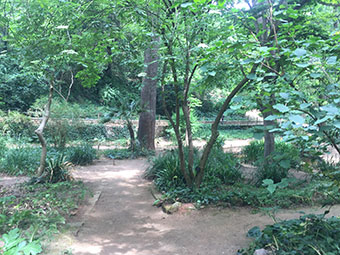
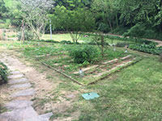
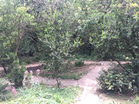

Aire Pur
Jardí Botànic Històric
  

Una de les seves característiques a destacar són les grans temperatures que arriben fins a 4 graus inferiors a les de la part superior del sot, això facilita el creixement d'algunes espècies habituades en climes més freds. Aquest jardí forma part del Museu de Ciències Naturals de Barcelona.